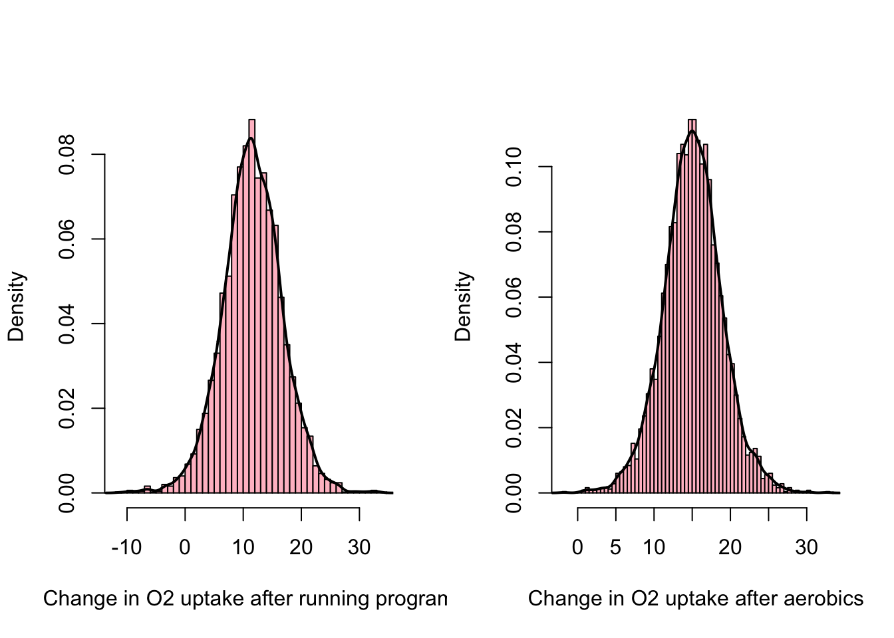

Lecture 15 Bayesian estimation for a regression model
Consider this model
\[ \{~\boldsymbol{y} \mid \mathbf{X}, \boldsymbol{\beta}, \sigma^{2}~\} \sim \operatorname{Normal}_{n}\left(\mathbf{X} \boldsymbol{\beta}, \sigma^{2} \mathbf{I}\right), \]
Everything in a regression analysis is conditional on \(\mathbf{X}\). The mean depends on \(\boldsymbol\beta\) the variance is \(\sigma^2\). If you think the conjugate priors are \(p\)-variate normal distribution for \(\boldsymbol\beta\) and inverse-gamma for \(\sigma^2\) you would be right.
\[ \boldsymbol\beta \sim \operatorname{Normal}_{p}\boldsymbol(\boldsymbol\beta_0,\boldsymbol\Sigma_0) \] \(\boldsymbol\Sigma_0\) is a \(p \times p\) positive definite covariance matrix.
Then the posterior of \(\boldsymbol\beta\) is \(p\)-variate normal and satisfies:
\[ \begin{aligned} \operatorname{Var}\left[\boldsymbol{\beta} \mid \boldsymbol{y}, \mathbf{X}, \sigma^{2}\right] &=\left(\boldsymbol{\Sigma}_{0}^{-1}+\mathbf{X}^{T} \mathbf{X} / \sigma^{2}\right)^{-1} \\ \mathbf{E}\left[\boldsymbol{\beta} \mid \boldsymbol{y}, \mathbf{X}, \sigma^{2}\right] &=\left(\boldsymbol{\Sigma}_{0}^{-1}+\mathbf{X}^{T} \mathbf{X} / \sigma^{2}\right)^{-1}\left(\boldsymbol{\Sigma}_{0}^{-1} \boldsymbol{\beta}_{0}+\mathbf{X}^{T} \boldsymbol{y} / \sigma^{2}\right) \end{aligned} \]
Variance is a matrix and mean is a vector.
Posterior precision = prior precision \((\boldsymbol \Sigma_0^{-1})\) + sampling precision.
Remember that the covariance matrix of \(\boldsymbol{\hat\beta}_{ols}\) is \(\sigma^2 (\mathbf{X}^T \mathbf{X})^{-1}\) so the sampling precision of \(\boldsymbol \beta\) is \((1 / \sigma^2) (\mathbf{X}^T \mathbf{X})\).
The posterior expectation (the mean vector) is a weighted average of the prior mean \(\boldsymbol\beta_0\) and the OLS estimate \(\hat{\boldsymbol\beta}\). They are weighted by their precision matrices. Wait a sec. How is \(\mathbf{X}^T \boldsymbol y / \sigma^2\) a multiple of \(\hat{\boldsymbol\beta}?\)
\(\hat{\boldsymbol\beta}\) times its precision matrix is
\[ \begin{aligned} (\sigma^2(\mathbf{X}^T \mathbf{X})^{-1})^{-1} \hat{\boldsymbol\beta} &= (1 / \sigma^2) \mathbf{X}^T\mathbf{X} \hat{\boldsymbol\beta}\\ &=(1 / \sigma^2) (\mathbf{X}^T\mathbf{X}) ((\mathbf{X}^T \mathbf{X})^{-1} \mathbf{X}^T \boldsymbol y)\\ &= 1 / \sigma^2 (\mathbf{X}^T \boldsymbol y) \end{aligned} \]
The variance argument is even uglier but the result is really sensible!
\[ 1/\sigma^2 \sim \text{gamma}(\nu_0/2, \nu_0\sigma_0^2/2) \] and
\[ \{\sigma^{2}|\boldsymbol{\beta},\mathbf{X},\boldsymbol{y}\} \sim \text{inverse-gamma} \left(\left[\nu_{0}+n\right] / 2,\left[\nu_{0} \sigma_{0}^{2}+\operatorname{SSR}\left(\boldsymbol{\beta}\right)\right] / 2\right) \] where \(SSR(\boldsymbol\beta) = \sum{ (y_i - \boldsymbol\beta^T \boldsymbol x_i )^2 }.\)
Posterior sum of squares = prior sum of squares + data sum of squares.
The conditional distribution of \(\boldsymbol\beta\) given \(\sigma^2\) and the data is nice, the conditional distribution of \(\sigma^2\) given \(\boldsymbol\beta\) and the data is nice so posterior simulation here is gonna be done by Gibbs sampler!
Given { \(\boldsymbol \beta^{(s)}, \sigma^{2(s)}\) }, we sample new values by:
Updating \(\boldsymbol{\beta}\) :
- compute \(\mathbf{V}=\operatorname{Var}\left[\boldsymbol{\beta} \mid \boldsymbol{y}, \mathbf{X}, \sigma^{2(s)}\right]\) and \(\mathbf{m}=\mathrm{E}\left[\boldsymbol{\beta} \mid \boldsymbol{y}, \mathbf{X}, \sigma^{2(s)}\right]\)
- sample \(\boldsymbol{\beta}^{(s+1)} \sim\) multivariate \(\operatorname{normal}(\mathbf{m}, \mathbf{V})\)
Updating \(\sigma^{2}\) :
- compute \(\operatorname{SSR}\left(\boldsymbol{\beta}^{(s+1)}\right)\)
- sample \(\sigma^{2(s+1)} \sim\) inverse-gamma \(\left(\left[\nu_{0}+n\right] / 2,\left[\nu_{0} \sigma_{0}^{2}+\operatorname{SSR}\left(\boldsymbol{\beta}^{(s+1)}\right)\right] / 2\right)\).
This is fine, but it requires coming up with a sensible prior meaning we need a guess at \(\boldsymbol\beta\) and a guess at \(\sigma^2\) but not just that but also a measure of our confidence in those guesses. On your homework this week (Exercise 9.1) you are not told what prior to use. Which means you need to specify \(\boldsymbol \beta_0\)(prior expectation), \(\boldsymbol \Sigma_0\) (covariance matrix for the \(\boldsymbol \beta\)-vector), \(\nu_0\) and \(\sigma_0^2\) ( prior for \(\sigma^2\) ). Use this semiconjugate prior. We’re told most response values are between 22 and 24 seconds. So if 95% of observations are in a window of width 2 units that means;
\[ 4SD = 2 \implies SD=1/2 \]
- Take \(\sigma_0^2 = 1/4\)
- \(\nu_0\) is the prior sample size which the guess of \(\sigma_0^2\) is based on, so take \(\nu_0 = 1\)
- \(\boldsymbol\beta_0 = (\beta_{01}, \beta_{02}).\) \(\beta_{01}\) is the intercept which is expected time in first week set that to \(23\). \(\beta_{02}\) represents the slope which is to say the bi-weekly expected change. I say \(\beta_{02} = 0\)
- \(\boldsymbol \Sigma_0?\) set the covariance terms to 0. If the \(SD\) is 1/2 maybe be “diffuse” in the prior and set these \(SD\)s to double that? That makes \(\boldsymbol \Sigma_0 = \{\{1,0\},\{0,1\}\}.\)
Some regression problems have lots of predictor variables, how could you EVER come up with a sensible prior for such a problem. In a typical multiple regression problem before we’ve analyzed the data we generally have no idea what to expect. So what are things we can do? We’ll discuss two. Unit information prior and Zellner’s \(g\)-prior.
15.1 Unit information prior
A unit information prior is one that contains the same amount of information as would be contained in a single observation.
Take:
\(\nu_0=1\), \(\sigma_0^2 = \hat \sigma^2_{ols}\), \({\boldsymbol\beta_0} = \hat {\boldsymbol\beta}_{ols}\), \(\boldsymbol\Sigma_0 = n \sigma^2 (\mathbf{X}^T \mathbf{X})^{-1}\)
because \(\sigma^2 (\mathbf{X}^T \mathbf{X})^{-1}\) represents the “sampling variance.” take our prior to be consistent with that but \(n\) times as diffuse (spread out over a large area; not concentrated).
“Such a distribution cannot be strictly considered a real prior distribution, as it requires knowledge of \(\boldsymbol y\) to be constructed. However, it only uses a small amount of the information in \(\boldsymbol y\) , and can be loosely thought of as the prior distribution of a person with unbiased but weak prior information.”
Effectively what the unit information prior does is; prior says exactly what the data says but with only \(1/n\)th the certainty. By setting your prior information to be consistent with what the data says and then making it weak, you are protecting yourself from coming up with a prior that changes your conclusions in a way that isn’t justified (doing something foolish).
15.2 Zellner’s \(g\)-prior
Set \(\boldsymbol\beta_0 = \boldsymbol0\).
That’s not our prior belief at all! What does this do? Well if \(\boldsymbol \Sigma_0\) is full of big numbers to the extent that it does influence the posterior it will be in a way of nudging the \(\boldsymbol\beta\)-values back toward zero. That may not be a thing we want but it is not a terrible outcome either.
Set the prior covariance matrix \(\boldsymbol \Sigma_0\) to \(g\sigma^2 (\mathbf{X}^T \mathbf{X})^{-1}.\)
Take \(g\) big, most commonly \(g = n\), and in that case the \(g\)-prior is also a version of a unit information prior.
\[ \text{Var}[\boldsymbol\beta | \sigma^2,\boldsymbol y, \mathbf{X}] = g/(g+1) \times \sigma^2 (\mathbf{X}^T \mathbf{X})^{-1} \]
\[ E[\boldsymbol\beta | \sigma^2,\boldsymbol y, \mathbf{X}] = g/(g+1) \times (\mathbf{X}^T \mathbf{X})^{-1}\mathbf{X}^T \boldsymbol y \]
This is the fully conjugate prior where \(\sigma^2 \sim\) inverse-gamma and \(\boldsymbol\beta | \sigma^2 \sim\) Normal\(( 0, \sigma^2 \Omega )\) for some positive definite matrix \(\Omega.\) In the \(g\)-prior, that matrix \(\Omega\) is \(g(\mathbf{X}^T \mathbf{X})^{-1}.\) What is \(g?\) \(g > 0\) (only requirement) but the bigger \(g\) is the less influential the prior is. So we’ll see commonly \(g=n\). In the semiconjugate prior \(\boldsymbol\beta\) and \(\sigma^2\) are independent in the prior but not in the posterior so posterior approximation is based on Gibbs sampler. However, in the fully conjugate prior where \(\sigma^2 \sim\) inverse-gamma and \(\boldsymbol\beta | \sigma^2 \sim\) Normal, the posterior has those forms also! The posterior satisfies \(\{\sigma^2 | \boldsymbol y, \mathbf X\}\) is inverse-gamma UNCONDITIONALLY on \(\boldsymbol\beta\)
Here’s the recipe for posterior simulation \((\)a sample value of \(\left(\boldsymbol{\beta}, \sigma^{2}\right)\) from \(p(\boldsymbol{\beta}, \sigma^{2} \mid \boldsymbol{y}, \mathbf{X}))\) under the \(g\)-prior. It’s not a Gibbs sampler it will produce independent draws.
sample \(\sigma^{2} \sim \operatorname{inverse-gamma}\left(\left[\nu_{0}+n\right] / 2,\left[\nu_{0} \sigma_{0}^{2}+\mathrm{SSR}_{g}\right] / 2\right)\);
sample \(\boldsymbol{\beta} \sim\) Normal \(_{p}\left[\frac{g}{g+1} \widehat{\boldsymbol{\beta}}_{\text {ols }}, \frac{g}{g+1} \sigma^{2}\left(\mathbf{X}^{T} \mathbf{X}\right)^{-1}\right].\)
where
\[ \operatorname{SSR}_{g}^{z}=\boldsymbol{y}^{T}\left(\mathbf{I}-\frac{g}{g+1} \mathbf{X}_{z}\left(\mathbf{X}_{z}^{T} \mathbf{X}_{z}\right)^{-1} \mathbf{X}_{z}^{T}\right) \boldsymbol{y} \]
15.3 Bayesian analysis using invariant \(g\)-prior
Let’s do the \(g\)-prior with “unit information” logic.
\(g=n=12\), \(\nu_0=1\), \(\sigma_0^2=\sigma^2_{ols}\)
S <- 5000
g <- n; nu.0 <- 1; sigma2.0 <- sigma2.hat;
H.g <- g/(g+1) * X %*% solve( t(X) %*% X ) %*% t(X)
SSR.g <- t(y) %*% ( diag(n) - H.g ) %*% y
sigma2.sim <- 1 / rgamma(S, (nu.0+n)/2,
(nu.0*sigma2.0 + SSR.g)/2)
V.beta <- g/(g+1) * solve( t(X) %*% X )
m.beta <- as.vector( V.beta %*% t(X) %*% y )
beta.sim <- matrix(NA, S, p)
for(s in 1:S){
beta.sim[s,] <- rmvnorm(1, mean=m.beta,
sigma=V.beta*sigma2.sim[s])[1,] }As a result the posterior expected value of \(\boldsymbol \beta\) is
\[ E(\boldsymbol \beta|\boldsymbol \beta y, \mathbf{X}, \sigma^2) = g/(g+1)\times \boldsymbol{\hat\beta}_{ols}=\boldsymbol{\hat\beta}_{Bayes} \]
round(g/(g+1) * beta.hat.ols, 2)## [1] -47.35 12.10 1.93 -0.29So we have:
\[ E(Y)=-47.35+12.10\texttt{program}+1.93\texttt{age}-0.29\texttt{program:age} \]
The OLS result was
\[ E(Y) = -51.29 +13.11\texttt{program}+2.09\texttt{age}+-0.32\texttt{program:age} \]
# Reproduce Figure 9.3 on page 160 of Hoff (2009)
par(mfrow=c(1,3))
plot(beta.sim[,c(2,4)], xlab=expression(beta[2]), ylab=expression(beta[4]), cex=.5, pch=19)
abline(h=0, col="gray"); abline(v=0, col="gray");
hist(beta.sim[,2], freq=F, right=F, col="pink", breaks=40,
xlab=expression(beta[2]), main="");
lines(density(beta.sim[,2]), lwd=2); abline(v=0, lty=2, lwd=2)
hist(beta.sim[,4], freq=F, right=F, col="pink", breaks=40,
xlab=expression(beta[4]), main="");
lines(density(beta.sim[,4]), lwd=2); abline(v=0, lty=2, lwd=2)
Both posteriors cover zero. My results don’t look exactly like the book for this example. Specifically, I’m finding much higher posterior correlation between \(\beta_2\) and \(\beta_4\) than the book reported.
cor(beta.sim)[2,4]## [1] -0.9930654
Why the interest in \(\beta_2\) and \(\beta_4?\) Recall
\[ \begin{array}{l} \text{running}=\mathrm{E}[Y \mid \boldsymbol{x}]=\beta_{1}+\beta_{3}\texttt{age }\\ \text{aerobics}=\mathrm{E}[Y \mid \boldsymbol{x}]=\left(\beta_{1}+\beta_{2}\right)+\left(\beta_{3}+\beta_{4}\right)\texttt{age } \end{array} \]
Expected response to aerobics at age \(x =\) \(\beta_{1}+\beta_{3}\texttt{age}+\beta_2 + \beta_4 \texttt{age}\). So if we assumed that \(\beta_2= \beta_4= 0\), then we would have an identical line for both groups.
The quantity that is of primary interest is not \(\beta_2\) nor is it \(\beta_4\). As justified above it’s \(\beta_2 + \beta_4 x\). So let’s do posterior inference about \(\beta_2 + \beta_4 x\) for \(x = 20, 21, …, 31\)
# Compute posterior distributions of beta2 + beta4*x for x-values over the range of ages in the study
xvals <- 20:31 # range(age)
Effect.post <- beta.sim[,c(2,4)] %*% rbind(rep(1,length(xvals)),xvals)
probs <- c(.025, .25, .5, .75, .975)
Effect.quants <- apply(Effect.post, 2, quantile, prob=probs)
colnames(Effect.quants) <- xvals
boxplot(Effect.quants, ylim=c(-10, 15), col="pink",
xlab="age", ylab=expression(beta[2]+beta[4]*"age"))
abline(h=0)
The data seem to suggest that aerobics is more effective although the difference reduces with age. The estimated effect (difference between aerobics and running) is strongest at age 20 but the evidence for an effect is strongest at age 23 or 24. Why would that be? It’s not sample sizes, it’s a leverage thing. Estimation of \(\beta_2 + \beta_4x\) is most precise for intermediate values of \(x\) and most variable at the endpoints of the range of \(x\)-values.
15.4 Bayesian analysis using semiconjugate prior
Here we use a version of the ‘unit information prior’ idea.
The “unit information prior” is a prior distribution that is perfectly consistent with the data. It’s not a true prior.
- \(\nu_0 = 1\)
- \(\sigma_0^2 = \hat\sigma^2_{ols}\)
- \(\beta_0 = \hat\beta_{ols}\)
- \(\boldsymbol \Sigma_0 = \hat\sigma^2_{ols}(\mathbf{X}^T\mathbf{X})^{-1}\times n\) (times by \(n\) or a big number)
beta.0 <- beta.hat.ols;
Sigma.0 <- n * sigma2.hat * solve(t(X) %*% X)
nu.0 <- 1
sigma2.0 <- sigma2.hat
S <- 5000
Sigma0.Inv <- solve(Sigma.0) # Invert once, not every time
beta.chain <- matrix(NA, S, p)
sigma2.chain <- rep(NA, S)
# Starting values
beta <- beta.0
sigma2 <- sigma2.0
for(s in 1:S)
{
# Update beta first
V.beta <- solve( Sigma0.Inv + t(X) %*% X / sigma2 )
m.beta <- V.beta %*% (Sigma0.Inv %*% beta.0 + t(X) %*% y / sigma2)
beta <- rmvnorm(1, mean=m.beta, sigma=V.beta)[1,]
# Now update sigma2
SSR <- sum( (y - X%*%beta)^2 )
sigma2 <- 1 / rgamma(1, (nu.0 + n)/2, (nu.0*sigma2.0 + SSR)/2)
# Now save updated values
beta.chain[s,] <- beta
sigma2.chain[s] <- sigma2
}rbind(apply(beta.chain, 2, mean), # beta.hat = E[beta|y]
beta.hat.ols) # compare with ols estimate## [,1] [,2] [,3] [,4]
## -51.43312 13.33883 2.100746 -0.3275702
## beta.hat.ols -51.29395 13.10709 2.094703 -0.3182438rbind(apply(beta.chain, 2, sd), # posterior standard deviation
SE) # compare with standard error of ols## [,1] [,2] [,3] [,4]
## 12.73370 16.09087 0.5481267 0.6660272
## SE 12.25221 15.76198 0.5263585 0.6498086c(mean(sigma2.chain), sigma2.hat)## [1] 10.111767 8.542477median(sigma2.chain)## [1] 8.765855The median of \(\texttt{sigma2.chain}\) is closer to the ols estimate of \(\sigma^2\)
15.4.1 Prediction problem
Consider two 30-year-old men, one undertakes a running program and the other undertakes a step aerobics program
x.run <- c(1, 0, 30, 0) # beta vector for new observation
x.step <- c(1, 1, 30, 30) # beta vector
ytilde.run <- rnorm(S, mean=as.vector(beta.chain %*% x.run),
sd=sqrt(sigma2.chain))
ytilde.step <- rnorm(S, mean=as.vector(beta.chain %*% x.step),
sd=sqrt(sigma2.chain))Plot the posterior predictive distributions for their change in maximum oxygen uptake
par(mfrow=c(1,2))
hist(ytilde.run, freq=F, right=F, breaks=50, col="pink",
xlab="Change in O2 uptake after running program", main="")
lines(density(ytilde.run), lwd=2)
hist(ytilde.step, freq=F, right=F, breaks=50, col="pink",
xlab="Change in O2 uptake after aerobics", main="")
lines(density(ytilde.step), lwd=2)
- The runner’s posterior predictive distribution is centered around 10 or 12 so will probably be positive.
- The posterior predictive distribution looks a little higher for the aerobics guy
What is the posterior probability that the man who does step aerobics achieves a better result?
mean(ytilde.step > ytilde.run)## [1] 0.7154Estimate about a 72% chance the man doing aerobics gets a better result than the man who does running